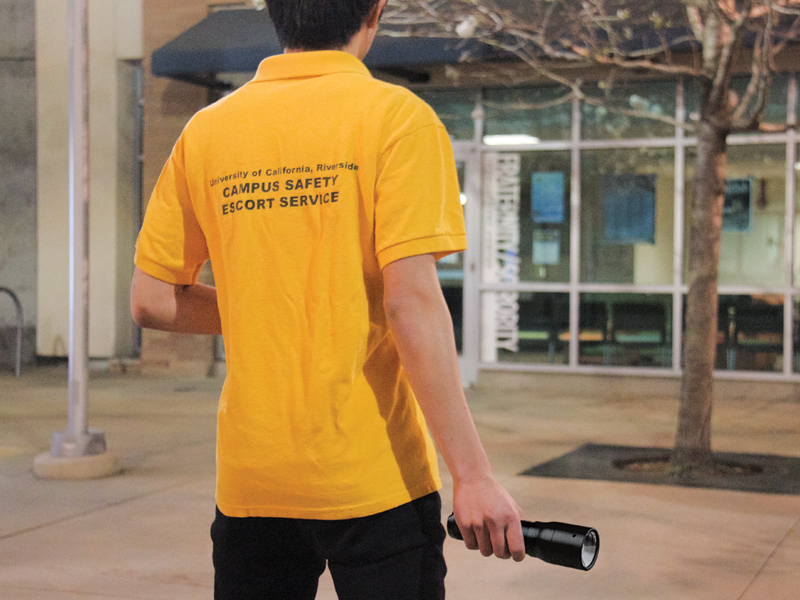
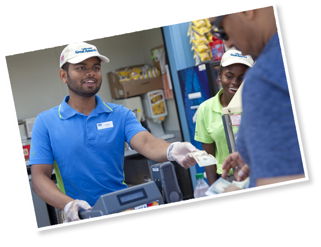
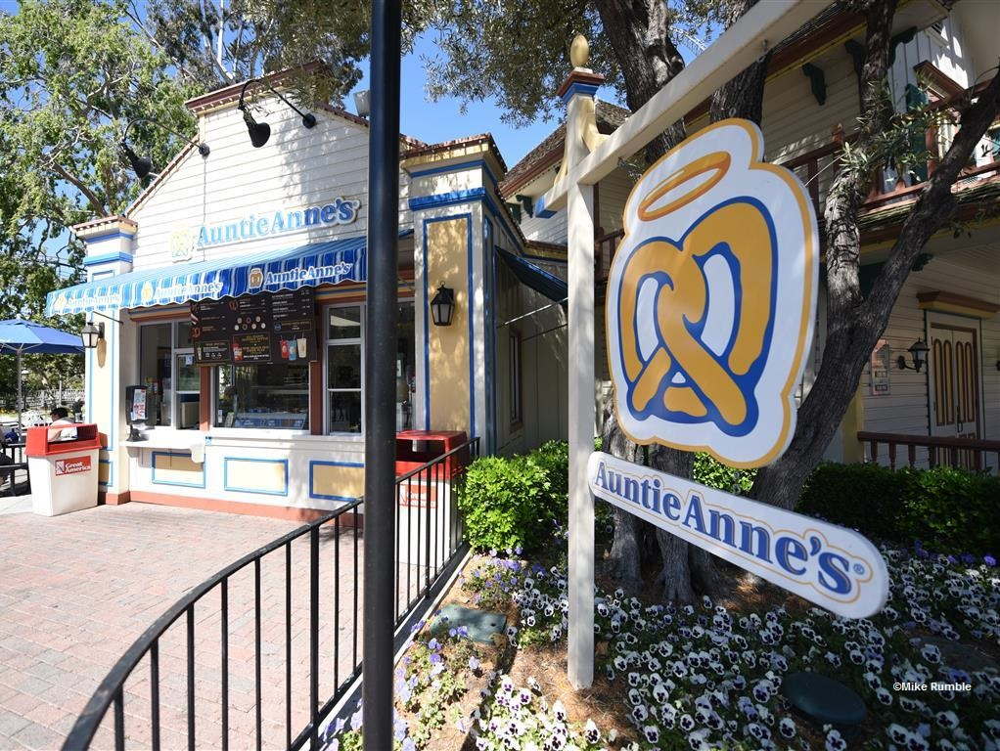
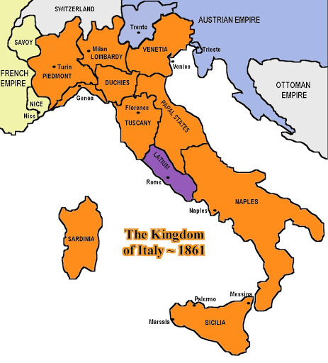
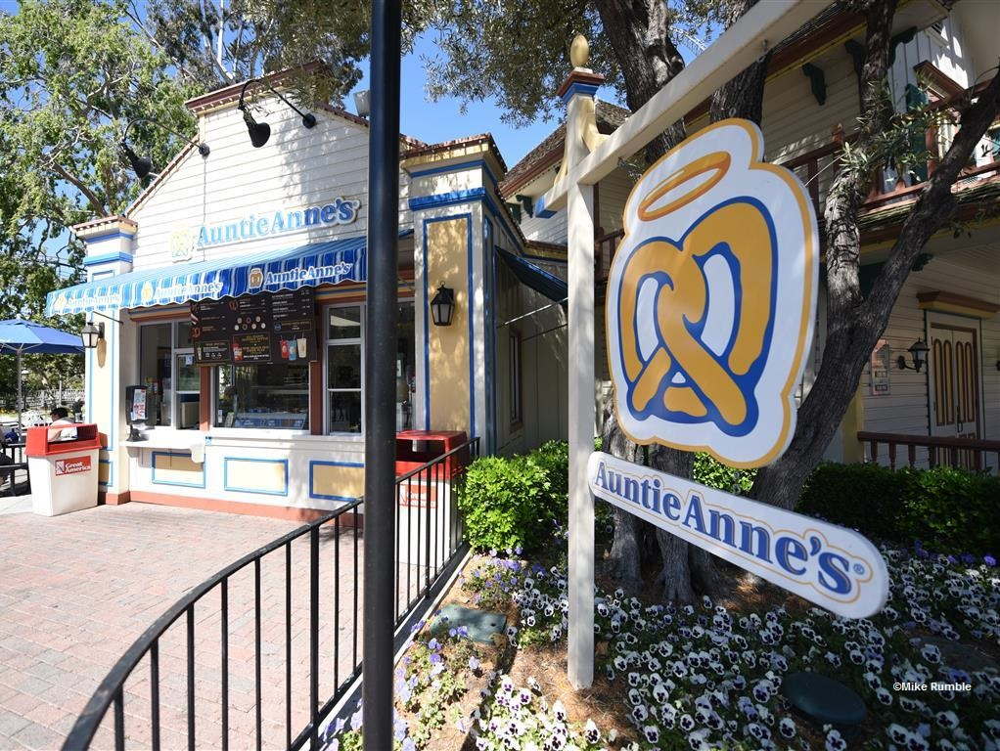
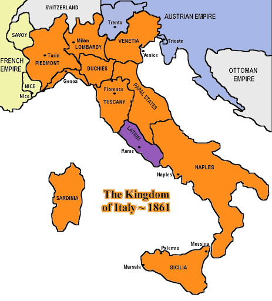

Cavour- ROger AnDrEs
My work history stems from working at fast food and the amusement park industry, which has allowed me to become comfortable and proficient in interpersonal interactions, clear communication, and attentiveness to detail. Academically, my courses in university have focused on policy analysis and political research, allowing me to become adept at creativity, critical thinking, time management, and analytical approach.
I am interested in finding a position that will last for at least 3 months. I am available to start in a new position as early as June 19, 2020. I will be graduating from college with a bachelor’s degree in political science and I am hoping future employment will give experience and skills to help me further pursue a career in local and state governmental affairs.
150 years ago I also was heavily involved in the formation of Italy as a modern state in international relations. I was resposible for establishing the Savoy monarchy's position of power in the 1860's and ensuring that the new Italian state would be Piedmont dominated.
I have been referred to as a genious politician that is often compared to Otto Bismarck even though I died before he even reached his primacy.
Experience
Campus Safety Escort
• Provide safe transportation for students
• Escort students during the after hours
Cashier
• Responsible for checking out customers
• Handling financial registration daily
Assistant Manager
• Duties included working with dough, foods, ovens, and managing the stations
• Working with customers and handling cashier
• Ensure a smooth process for product output across stations
Italian Statesman
• Premier statesman in the unifcation of Italy
• Designed the expansion of Piedmont-Sardinia into the Kingdom of Italy
• Consolidated power for King Victor Emmanuel II
• First Prime Minister of Italy
• Piedmont nationalist
Education
University of California Riverside
Portfolio






